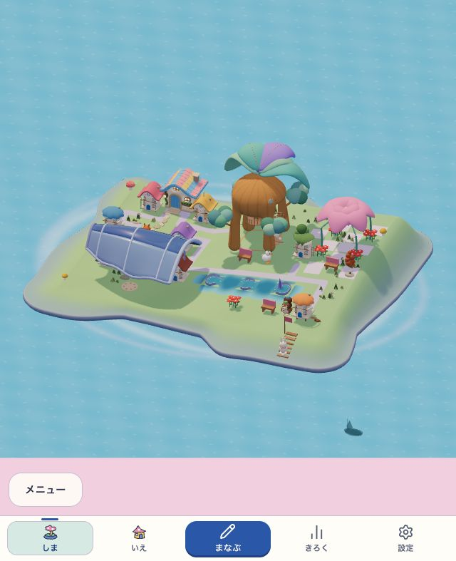
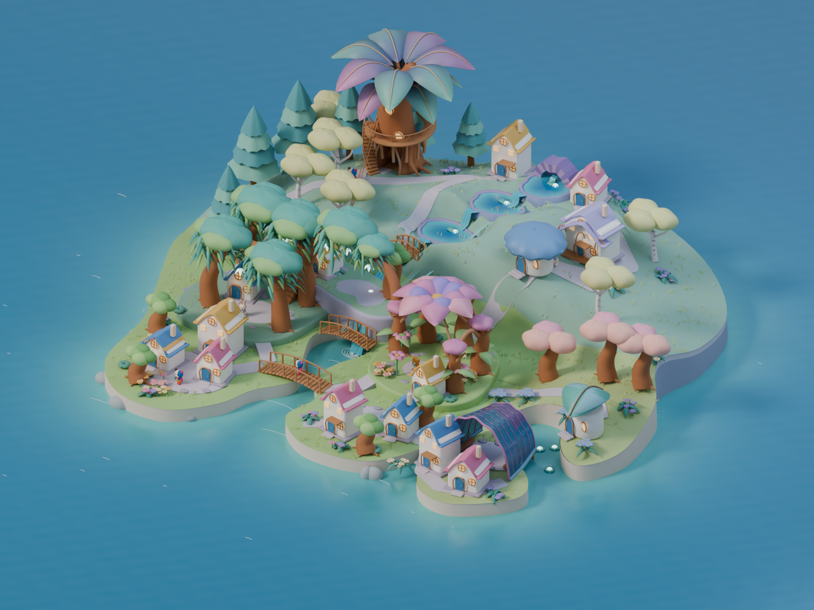

2026.10.10 · GROWING ISLAND
小物から、
そだつ場所へ。
森、水辺、入り江、花の庭。持っている木や家のつながりが、島全体の景色を変えていく。
目標はnative05の全景です。下はその方向へ進めた本体v3の実画面。森と庭の密度、深い入り江、段差と滝は、現在も見本よりかなり単純です。作者の方向GOと、ローカル実装の技術検証を分けて記録しています。

WHOLE ISLAND
目標と、いまの島。
同じ方向を見て改善できるように、承認した全島美術と実画面を並べています。

承認した全島3D · native05
大樹を中心に、丘・泉・入り江へ空間が広がる。
3Dの見本を見回す動く島全体 · DEV診断
所有物と入口を保ち、通れる床と使える場所へ。
この画像の撮影情報小物の集合から、中空の大樹、使える回廊、広い浅水、厚い共同屋根、花の中庭へ変えました。完成見本の密な森・深い入り江・段差と滝の構成は未再現です。現在地と残る差を、実全景で見返します。
FOUR LANDSCAPES
同じ島に、違う居場所。
大きさだけでなく、屋根・地面・水・歩く高さで、4つの景色を分けています。
木陰と、大樹の住まい
木のまとまりが屋根になり、実階段から枝の高床を歩ける。
青い泉の庭
水ばちと通水したみずみちが、地形に沿う広い水辺へ育つ。
入り江の集会所
家と遊び場を、入口を開けた丸い貝屋根がまとめる。
花の中庭
育った花と席の配置が、門や中庭の形を決める。
4枚は上の実全景を切り出して表示しています。別の生成画像や、固定の背景モデルではありません。
ACTUAL PLAY
手に入れて、つないで、戻ってくる。
通常の初回登録と学習から木を手に入れた、固定ビルドの実画面。390幅を中心に、同じ木を離して戻すところまで並べています。
320・390・768幅で各21回答、取得・接続・分離・再接続・同じ学習への復帰が完了。原report全体は後続の成熟待機でFAILのままです。時刻操作とfixture書込みはありません。実時間18時間/7日の自然成熟は未確認です。

01 · 390幅 · 通常取得 はじめの島
初回の島を開き、学習へ進む。

02 · 390幅 · 実際の学習入力 学習を進める
答えて、木を手に入れる流れへ。

03 · 390幅 · 目標の本 目標を選ぶ
好きな場所を選び、材料と形を見る。

04 · 390幅 · connected なえをつなぐ
まだ若い木で、場所のつながりができる。

05 · 390幅 · split 同じ木を離す
材料をなくさず、つながりをほどく。

06 · 390幅 · reconnect 同じ木を戻す
別の木を買わず、同じ所有物でつなぎ直す。

07 · 390幅 · 同じ学習へ復帰 学習から戻る
遊んだ島と、進めていた学習を保つ。

08 · 768幅 · 通常取得 広い画面でも
同じ接続を、タブレット幅で確認。
MATURE RUNTIME
育った場所を、実際に使う。
同じ固定v3の実画面。390幅の19件、全島390幅の1件、768幅の20件を、完了した原記録から集約しました。
15配置・4関係・全島を2幅で確認。単一runの全行程PASSではありません。固定Dateと成熟fixtureを明示し、過去の原FAILも残しています。指定した実利用を保存から確認した画像です。自律行動の観察をpointer操作の証拠にはしません。

01 · 390幅 · 全島 / P06 成熟した島全体
現在の成熟場所で、ぽこもこと住人の実利用を受領。

02 · 768幅 · 全島 / P06 広い画面の全島
同じ20配置を768幅でも独立して確認。

03 · P02 / court · 実描画 大樹と回廊
同じ所有の木と家から、木の部屋と高床を描画。

04 · P03 / tiered · 実利用 広い浅水の庭
現在の水辺で、指定した実利用を受領。

05 · P04 / bay · 実利用 貝屋根の集会所
家と遊び場を保ち、現在の遊び場の利用を受領。

06 · P05 / arch · 実利用 花の門と席
花の配置が作る場所で、指定した席の利用を受領。
画像は固定NEWの実描画です。各実利用はactor・対象・完全revisionを照合。重要経路の全画像と集約の根拠を残しています。自然成長・子どもの理解・実機の観察とは分けます。
EVIDENCE
見た目と、確認した範囲を分けて残す。
DEVの成熟見本、通常取得、固定版の成熟診断は、それぞれ違う証拠です。
撮影情報・実行結果・原記録を見る
| 区分 | 確認したこと | 制限・結果 |
|---|---|---|
| 目標の美術 | native05の全島3D | 到達目標。森/庭の密度、深い湾、段差と滝は未再現。 |
| 作者のDEV全景 | 実際の640×787で全島を比較。 | GO_LOCAL_V3_DIRECTION。成熟fixtureの見本で、完全再現や参加者評価ではない。 |
| 通常取得 · 固定v3 | 320/390/768幅、各21回答と通常購入・学習往復。 | 3旅程完了。原run全体は後続でFAILのまま。fixture書込み/時刻操作なし。 |
| 成熟診断 · 固定v3 | 390幅19件＋全島390幅1件＋768幅20件。 | 複数runの40件集約。明示fixtureと固定Date。単一コマンド全PASSではない。 |
| core / 既存旅程 | 564 files / 4,966 tests、classic32、案内24画面、balance12画面。 | 独立build UUID。元archive対immutable NEWの1,837共通入力がbyte一致。distや最終QAの同一性は主張しない。 |
| 保存 / 実SW | 生成QAの通常/中断4ケース・14画面。 | 正確なNEW/ROLLBACKを使うローカル検証。旧writer隔離は別のfake-IDB診断。14画面は成熟美術の証拠ではない。 |